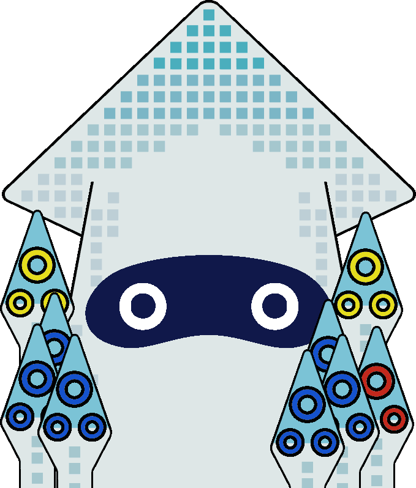
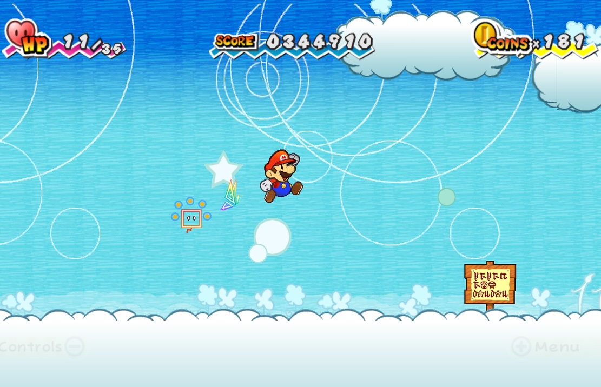
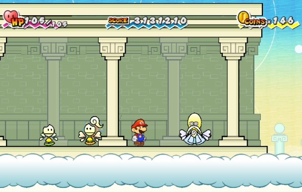

If I told you about a game about prophecies, interdimensional travel, and universe-ending dark magic, you
probably
wouldn't think of a Mario game first. Despite this, Super Paper Mario has all those story elements and more in
the single greatest Mario storyline of the entire franchise.
Plot
The story begins with Mario being told Princess Peach was kidnapped, but when he and Luigi
arrive at Bowser's castle, Bowser hasn't done anything. At that moment, the villainous Count
Bleck appears. After his introduction, and attacking Mario, he vacuums everybody else up
into a type of black hole, everyone except Mario. This includes Bowser, his minions, and
Luigi. Where they get taken is a wedding between Bowser and Peach, organized
by Count
Bleck. Once he forces them to say "I do", the Chaos Heart is unleashed, and with it Count
Bleck gets its dark powers, making him nearly unstoppable in his quest to destroy the
universe.
Gameplay
Battle System
This game is the first in the series to break conventions and
completely change genre, from
turn-based RPG to a 2D platformer with RPG elements. Thus, the overworld gameplay and combat
both share the same gameplay. Specifically with combat, Mario's primary
attack is jumping on
enemies, just like the Mario Bros. games. However, the more partners, called Pixls, you get,
the
deeper and more interesting the combat gets. Using the abilities of the Pixls, you can
actually come up with some pretty cool attacks. For example, picking up an enemy and
throwing them at other enemies, or even planting a bomb and then throwing that at
enemies. Even though the game is a 2D platformer, there are still
experience
points that you
get for defeating enemies, making the combat feel worth it to do. The
stylish moves from
Paper Mario: The Thousand-Year Door also make a return. You
perform them by shaking the Wii remote at the right time while in midair. The more stylish
moves you chain together before landing, the more experience points you get. It can be
extremely satisfying to chain a bunch of stylish moves together and see the experience
points go up like crazy.
Overworld
This game's overworld gameplay primarily consists of
a lot more platforming and
environmental puzzle-solving.
Platforming is the core focus of the gameplay this time around. With very
fluid and snappy
controls, it is very fun to play through the stages of the game. There are also even more
puzzles
to solve than the last two games. Because of the sheer amount of
tools and abilities you unlock in this game, the potential for
puzzle solutions
increased a
lot. Not only does Mario get more partners in this game than the previous games, but there
are
also multiple playable characters, who also have their
own abilities. Because of this great
amount of ability variety, it also makes it super fun to go back to previous areas to use
abilities you previously did not have access to, opening up new possibilities all throughout
the game and making it extremely explorable and replayable. I always get excited when I
unlock
a new ability because then I get to test it in a whole bunch of places.
Playable Charcters
This game is the first and only Paper Mario game that has multiple playable characters
beyond just Mario. This gives a whole bunch of gameplay variety, as well as more personality
to the group of heroes. Here are the playable characters of the game, in the order you
unlock
them:
Mario -
Your
journey, unsurprisingly, begins with Mario. He gets
granted the ability to flip
between dimensions very early on in the game. This lets you flip the camera perspective 90
degrees, changing the gameplay from 2D to 3D. This gameplay mechanic is one that hadn't been
seen before and hasn't really been seen since. It's a very cool mechanic that opens up a lot
of exploration and puzzle-solving opportunities.
Princess Peach -
Princess Peach joins the
party not long after the beginning of the game. This is one of
Peach's best games in my opinion. She is not
as helpless as she has been in past games, but
she also maintains her kind and thoughtful personality, giving her the best of both worlds.
Her abilities have to do with her parasol. She can slow down her fall speed dramatically by
opening her parasol in midair, allowing her to cross long gaps. She can also defend and
seek
shelter under her parasol by pressing down to duck, making her invulnerable to damage, but
unable to move.
Bowser -
Bowser begrudgingly joins the crew just under halfway
through
the game. He decides to
join them because if they can't put a stop to Count Bleck, he'll have no kingdom to take
over and eventually rule. Bowser is very strong, and deals double the attack damage of our
other heroes. He can also breathe fire by pressing down, giving him another powerful
attacking option, as well as solving fire-related puzzles.
Luigi -
Luigi joins the party very close to the end of the
game. His special ability is that he
can perform a super jump, allowing him to jump super high and reach new areas. He can also
use this super jump to attack enemies by launching into them from below. It is a very
versatile ability. Super useful during platforming sections, as well as gives a valuable
extra combat option.
Partners
Tippi
Tippi is the first Pixl you meet and is your main companion throughout the adventure. She's
the one who found Mairo alone in Bowser's castle and took him to Flipside, the main town of
the game. She's very courageous and always stays by Mario's side. Tippi can give Mario
tips
on enemies, bosses, and puzzles. She can also reveal hidden objects. Later on
in the game,
events begin occurring, leading the heroes to realize there may have been more to Tippi
than first meets the eye.
Thoreau
Thoreau is a plucky Pixl who is very excited when he is found in his 1500-year-old chest by
Mario. Thoreau's ability allows Mario to grab and throw faraway enemies and
objects, as well
as activate faraway switches. You can even throw enemies into other enemies, dealing damage
to both of them. His ability is very versatile and one that I like to have
active as much as possible.
Boomer
Boomer is a bomb Pixl who just loves exploding. That's pretty much all he cares about in
life. His main ability is exploding (as you may have guessed). He can explode
cracked walls,
as well as switches. His fuse timer allows for solutions to time-based puzzles. His
explosions are also good for damaging enemies. You can even combo Thoreau and Boomer
together to throw Boomer's bomb before he explodes.
Slim
Slim is a very chill and laid-back Pixl. He likes to live in the now and is very "go with
the flow". His main ability allows Mario to flip sideways to become virtually
invisible to
our camera view. If Mario stands still, he can become completely intangible, allowing him to
pass through walls and enemies.
Thudley
Thudley is all about style. When you first find him, he assesses your current character's
style with some very funny dialogue. His main ability enables the user to perform a
ground-pound. This is useful for destroying blocks below, as well as pounding
stakes into
the ground to solve puzzles. It can also be used to damage enemies from above with double
damage, making him an incredibly useful Pixl.
Carrie
Carrie is a more mellow Pixl who is just happy to help. She had to make sure Mario shared
the same opinions as her before joining him. Her main ability is
becoming a platform for
Mario to hover around on. This allows him to travel over spikes and lava, as well as jump on
enemies of that nature. It also slightly improves his walking speed. Carrie can be combo'd
with Bowser to allow him to breathe fire in midair, making Carrie and Bowser a formidable
duo.
Barry
Barry is a completely optional Pixl who you can miss if you're not careful. In terms of
personality, he's more of a "keep to himself" kind of Pixl. He's happy to help Mario but
needs to know he can trust him first, which is why he is optional. His ability
produces a temporary shield around the user, making them invulnerable to
attacks while it's
active. It is also a spiky shield and thus damages any enemies that come into contact with
it. The shield can also be used to reflect projectiles back to the sender.
Fleep
Fleep is a bit of a goofy Pixl. He loves to help Mario but isn't the brightest bulb in the
shed. His main ability allows Mario to flip the fabric of reality within a
square area. This
lets him uncover secret items hidden on the other side, and it can also be used on enemies
to make them dizzy.
Cudge
Cudge is a very energetic Pixl who loves shouting catchphrases. When Mario first meets him,
he asks Mario what his favourite catchphrase is. His ability allows Mario to wield a trusty
hammer again, allowing him to damage spiked enemies that he otherwise
couldn't jump on. It
also allows him to break hammer-specific blocks that he couldn't before. Having the hammer
added to your moveset is incredibly useful. Cudge is another ability that I like to have
active
often.
Dottie
Dottie is a very quiet Pixl who likes to look out for the little guy. Her ability can
literally make Mario the little guy, by shrinking him down to a microscopic
size. This is
useful to fit into tiny gaps that Mario couldn't before. It's also useful in combat because
enemies can't see you, but you are still able to deal regular damage, making you the
ultimate stealth operative.
Dashell
Dashell is another optional Pixl that you find at the bottom of the Flipside Pit of 100
Trials. He loves livin' life in the fast lane, always wanting to go, go, go! His ability is
both quite simple and really great. He more than doubles Mario's run speed,
enabling you to
really zip around stages in a very enjoyable way.
Piccolo
Piccolo is the final optional Pixl, which you get by doing an extensive side-quest. She
loves
music and lives
her life by it. Her ability is to play music that matches the personality of
the
user. The music
cures the user's status ailments, such as poison or slowness. It can also open up blocks
that have musical notes on them.
Chapters
Prologue: Flipside
After Count Bleck takes everybody away from Bowser's Castle except for Mario, he is soon
found by the Pixl Tippi. Tippi takes Mario to her hometown, Flipside, which
is a dimension
between dimensions. Upon arriving, it becomes very apparent that the worlds and people Mario
will meet throughout the game will be a bit more extraordinary. They are a lot more
geometric in composition, adding to the other-worldly feel that the game goes for.
Otherwise, the town of Flipside is quite peaceful and homey, with an extremely relaxing and
nostalgic song to go with it. Flipside is where you return to after each chapter and
expands as you go. Each new ability, Pixl, and character you unlock opens up new areas to
explore, making Flipside a joy to run around in. Mario first visits Merlon,
who lives in
Flipside. He tells Mario all about the dark prophecy book, called the Dark Prognosticus.
It covers Count
Bleck's plan for the
universe's destruction, and also talks of a legendary "hero in red", which is Mario. After
receiving his
mission, Merlon gives him his first Pure Heart, which, as the name suggests, are hearts
with pure energy that can counteract the Chaos Heart that Count Bleck is using. After
receiving a Pure Heart, Mario must search Flipside and find a Heart Pillar to
set it upon.
Once he does, a door leading to the dimension with the next Pure Heart opens.
Flipside
Merlon's House
Heart Pillar
Chapter 1: Lineland
As with every Paper Mario game we've seen so far, the introductory chapter is always
incredibly strong at instilling a sense of adventure. The first area,
Lineland Road, is a
great introduction to the more platforming-centric gameplay of Super Paper Mario. It even
directly takes sections from the very first Mario Game! This is where Mario gets his
dimension-flipping ability from Bestovious. After the grassy plains, Mario scales
Mount Lineland, finding Thoreau at the end of the road. After the mountain,
Mario
travels through the
Yold Desert, encountering one of Count Bleck's minions, O'Chunks. He's a very
loud and proud,
but not-so-smart guy, who also isn't too difficult to beat. After the desert, Mario makes
his way into the Yold Ruins, which is the main dungeon of the chapter. It
gives a
spooky
sense of abandonment and feels very cool to make your way through. It is here
where you get
the first real taste of the puzzle aspect of this game, using Mario's
flipping ability,
revealing hidden objects with Tippi, and reaching faraway switches with Thoreau. Eventually,
Mario makes his way outside, where he finds the guardian of the Pure Heart,
Fracktail. He is
a robot dragon who was programmed to protect the Pure Heart from all except the hero of the
prophecy. However, just as he is about to give the heart to Mario, one of Count
Bleck's
underlings, Dimentio,
hacks
Fracktail, forcing Mario to defeat him in order to obtain the
Pure Heart.
Lineland Road
Mount Lineland
Yold Desert
Yold Ruins
Chapter 2: Merlee's Mansion
After Mario defeats Fracktail, back in Flipside, he finds Princess Peach lying on the
ground! After a while, she wakes up with no memory as to what happened and joins Mario in
his quest. After
finding
the Heart Pillar together, they go through door #2, taking them to
Gloam Valley. Gloam Valley is a very orange-hued place, with an orange sunset
as well as
orange water! About halfway through Gloam Valley, Mario and Peach find their second Pixl,
Boomer. At the end of Gloam Valley's path, they arrive at Merlee's Mansion.
This is where
the game got pretty creepy for me as a kid, taking a very horror-esque and cryptic angle.
Merlee's Mansion is completely isolated and empty inside, apart from one of Count Bleck's
underlings, Mimi,whom Mario
is led to believe is Merlee's maiden. After a while of
exploring the empty mansion, Mario ends up breaking Mimi's favourite vase by mistake, giving
her grounds to sentence him to practically eternal servitude within the mansion. He has been
sentenced to a fine of 1 000 000 rubees and has to work that debt off. After a very long
time working, Mario finds another Pixl, Slim, hidden within a wall. With Slim's power, Mario
is able to bypass securities and unlock the secret vault, containing
exactly 1 000 000
rubees, freeing him of his debt. After this, Mimi completely throws away the
facade and
shape-shifts into her true self. Her true form is an extremely
creepy-looking spider-like
abomination. She then begins to chase you all throughout the mansion's basement as Mario
tries to find Merlee amid all this chaos. Being chased by this spider thing gave me
nightmares as a kid! But after a while, Mario finds the true Merlee, who helps him defeat
Mimi, and then bestows upon him the Pure Heart.
Gloam Valley
Merlee's Mansion (Outside)
Merlee's Mansion (Inside)
Working to Pay Debt
Chapter 3: The Bitlands
Chapter 3 is very platforming-centric. It begins with Tippi being kidnapped by a
nerdy chameleon named Francis. Mario thus has to move as fast as he can to get her back. To
get to Francis' base, Fort Francis, the Pixl Barry gives him directions. Mario
first travels
through the Open Plane of the Bitlands, which is a grassy area heavily
inspired by the
old-school Mario platformers. Mario ends up meeting Bowser on the way, who had been
setting
up a bit of a fortress for himself. After battling with Bowser, Mario and Peach are able to
convince him to join their cause. Mario then swims through the Tile Pool, which is the first
and only fully underwater section of the game. Along the way, Mario finds Thudley the Pixl
in a
nearby cave. Mario then has to fight a massive blooper on the
way. After he gets out of the water, he finds a massive tree, called the
Dotwood Tree, that
he has to scale in order to move forward. Inside the tree is a large mixture of platforming
and puzzling elements, revolving around making platforms disappear and reappear in the
correct order.
After getting past the tree, Mario and co. arrive at Fort Francis. The
fortress
consists of a lot of funny gags about nerd culture, like anime, comic books, cats, and
gaming.
They do a very good job with the humour in this place. While in the fortress, Mario rescues
Carrie the Pixl from a cage that Francis had put her in. Afterwards, Mario confronts
Francis,
but before they fight, Francis becomes infatuated with Princess Peach, resulting in a very
amusing dating sim segment of the encounter, which is one of the most memorable gags of
the
game. The developers weren't at all afraid to go beyond the Mario conventions with this
game.
After the dating-sim, Mario, Peach, and Bowser all battle Francis to save Tippi.
After
they do this, because of how grateful Tippi was that Mario came to save her, the Pure Heart
literally comes out of her from all her gratitude and trust, which was what needed to occur
for
that particular Pure Heart to come to light.
The Open Plane
The Tile Pool
The Dotwood Tree
Fort Francis
Chapter 4: Outer Space
Chapter 4 takes Mario and co. out into space! A lot of this chapter is like
playing an
old-school space shooter game with a new ally named Squirps. When Mario first meets him,
he's not entirely sure if he can be trusted, but goes along with him anyway. Halfway
through the chapter, Mario and the gang land on a nearby planet, called Planet
Blobule, so
that Squirps can go to the bathroom. However, the one stall on the planet is occupied by
Fleep, and there's no toilet paper left! Thus Mario spends a good chunk of time exploring
the planet, trying to find paper for Fleep to use so that everyone can move forward. After
all this, Squirps tells the group that the Pure Heart can be found in a place called the
Whoa Zone. The Whoa Zone is a very extensive and convoluted maze that
requires you to think
quite a bit to make your way through it. Its main puzzle gimmick is shifting the
gravity of the entire place. Once Mario and the group make it through, awaiting them is none
other than... Luigi? Actually, it is Mr. L! Mr. L is Luigi's alter ego,
created by Count
Bleck's underling, Nastasia when
she used a spell on Luigi. He's more confident than Luigi is, but is also
more cocky. He built a large robot, called the Brobot, that he uses to
try and defeat
Mario. Mario ultimately triumphs, and Mr. L flees back to Count Bleck. Afterwards, Squirps
provides the heroes with the next Pure Heart.
Outer Space
Planet Blobule
Whoa Zone
Chapter 5: The Land of the Cragnons
Chapter 5 takes Mario and co. to the Land of the Cragnons, specifically Downtown of
Crag.
Cragnons are a group of cavemen-like
people. As such, they are very
limited in their intelligence. Shortly after arriving, the Cragnons
enlist Mario's help to rid themselves of the Floro-Sapiens, which are a clan of more
developed
flower creatures, who are continuously invading the Cragnons and kidnapping them for
an
unknown reason. After solving a puzzle to do with memorizing the order to hit three blocks,
Mario finds the Pixl Cudge and then heads into the Floro Caverns. While in
there, Mario
finds a particularly special Cragnon called Flint Cragley, who seems to have lost his
camera crew within the caverns. After Mario explores the caverns to find them, he makes his
way into the main base of operations of the Floro-Sapiens within the Floro Cavern. It is
there that Mario discovers that the Floro-Sapiens have been planting sprouts on the
kidnapped Cragnons' heads, which brainwash them into doing labour. Mario also finds his
final
main story Pixl, Dottie. Using Dottie's power to shrink down, he infiltrates the base and
confronts the king of the Floro-Sapiens,
King Croacus IV. After defeating
him, the heroes
come to realize the whole situation has been a complete misunderstanding.
The Floro-Sapiens
hadn't been evil at all. They were kidnapping the Cragnons because they were polluting the
water without realizing its consequences. Now that the whole misunderstanding had been
settled, the Floro-Sapiens give the heroes King Croacus' Pure Heart, and the crew leaves
having made amends between the Cragnons and the Floro-Sapiens.
Downtown of Crag
Floro Caverns
Floro Caverns (Treasure Room)
Chapter 6: Sammer's Kingdom
This chapter is where things start to get real in the story. Mario and Co. get taken next to
Sammer's Kingdom, which is a kingdom filled solely with samurai-like
inhabitants, called
Sammer Guys. When
Mario arrives, he is greeted by the king, King Sammer, who is the
possessor of the next Pure Heart. He says that if Mario is able to defeat the 100-round
gauntlet of Sammer Guys, then he will have earned the pure heart. More noticeable than that,
The ever-growing Void created by Count Bleck is ginormous here, making it
feel very
precarious. And so, with the clock not on his side, Mario begins fighting the 100 Sammer
Guys, one by one. This gets pretty tedious fast, but I think that only adds to the genius of
the storytelling in this chapter. I think this because the gameplay that you are doing in
this chapter is very mindless, allowing your brain to focus on everything else around
you, like the void. After nearly every Sammer Guy you beat, it rumbles again and again as it
continues to expand, looming over the heroes as they hurriedly make their way through the
Sammer Guys. After defeating about 20 of the Sammer Guys, Count Bleckhimself emerges
to
tell
the heroes that the void is about to destroy the entire Sammer Kingdom. When Tippi tries to
talk some sense into him, Count Bleck appears to go soft, withdrawing with a
hesitant
voice,
eluding to the fact that something more is going on between the two of them.
After this, the Sammer Guys are too afraid of The Void to even fight Mario. Mario
just continues to run past them, one at a time, not even batting an eye. Not long after,
what Count Bleck said comes true. In
a spectacular yet horrifying fashion, the entire world, and all its inhabitants, are
essentially deleted from existence, leaving the heroes in an empty, blank
void of nothing.
No life, no buildings, no music. This whole section is done impeccably well and really
gives the player a sense of the stakes that they are facing. Once the gang are just left in
the
empty world, all they do is walk right, through the subtle bits of
the destroyed world that
had just existed not too long ago. Eventually, after a very
long, silent, and
bone-chilling walk, Mario and Co. encounter, yet again, Mr. L, awaiting them,
ready to clean
up what remained of Sammer's Kingdom. The heroes battle his new Brobot L-Type and emerge victorious. Mr.
L is
then banished by Dimentio to who knows where after his second failure. After
this, they find what is left of the Pure Heart that King Sammer had. The heart was devoid of
all power and was essentially just a heart-shaped rock.
The heroes take it back to Merlon's house to see if there is anything that
he could do, but
before he gets a chance to, Dimentio shows up in Merlon's house and sends Mario, Peach,
Bowser, and all the Pixls to the same place he banished Mr. L,
The Underwhere, which is
effectively the underworld in this game. After getting his bearings, Mario realizes that
neither Peach nor Bowser is with him. They had been sent to other parts of The Underwhere.
Continuing forward, Mario eventually finds the queen of The Underwhere, Queen Jaydes, and
seeks her help. He explains that he hadn't actually died, and needed to get back to the real
world. He also asked for her assistance with the dead Pure Heart, as if anyone could have
helped, it was her. She agrees to try and help but asks in return for Mario to find her
lost daughter, Luvbi.
Shortly after Mario sets off, who should he find, but good old
Luigi! He was
hiding in a corner scared for his life and very confused. It seems that he had turned
back to his old self once again finally. Now together, Mario and Luigi find Luvbi, and
return to Queen Jaydes, who was successful in reviving the Pure Heart! She then obliges to
send the brothers back, even though they haven't found Peach or Bowser yet.
MAN, did I have a lot to say about that one or what? Like I said, the storytelling in this
chapter really reaches a new level, and the game only continues to carry that trend forward!
Sammer's Kingdom
Count Bleck in Sammer's Kingdom
World of Nothing
The Underwhere
Chapter 7: The Underwhere
After Mario and Luigi find the next heart pillar, to their surprise, the next door takes
them
right back to where they just came from; The Underwhere. Thus, when they find
Queen Jaydes again
after having just been sent back home, she's quite confused to see them again. Nonetheless,
she sends the bros. on a new mission to escort her daughter Luvbi up to her father,
Grambi,
in The Overthere. Thus, Mario and Luigi start heading through the dank and dark hallways of
The Underwhere Road
that leads out of The Underwhere, passing quizzes of door guards as they go. Eventually,
they
wind up running into Bowser, who had been locked up by some guards. Bowser throws a bit of a
tantrum and tries to fight Mario again, but loses. Then he rejoins the team, and the three
of them make their way out of The Underwhere and toward the Overthere, which is essentially
Heaven. To reach The Overthere, the group first has to do a very long and convoluted climb
up the Overthere Stair. Along the way, they find Princess Peach incapacitated
next to a tree
growing magical apples. Luvbi tells Mario that they need to find a different type of magical
apple somewhere in the Overthere Stair that will wake Peach up. After many times testing
various apples, going back and forth, they find the apple that wakes Peach up, and she joins
the crew once again. We now finally have the full group of four heroes.
After reaching The Overthere, there's a bit of a war going on between the
angel-like creatures, Nimbis, and
skeleton creatures, called Skellobits. The group goes to confront the king of the
Skellobits, named Bonechill. After
defeating him in a boss fight that's way too easy, both
Grambi and Queen Jaydes arrive to thank the heroes. Just at that moment, Luvbi
begins to
transform into the final Pure Heart! It turns out that this Pure Heart was magically
transformed into a Nimbi to conceal its true self, and that Grambi and Queen Jaydes
were not Luvbi's real parents. After coming to terms with this, Luvbi allows herself to
fully transform and bestows herself to the heroes. At last, they have secured every last
Pure
Heart.
The Underwhere Road

The Overthere Stair
Peach in The Overthere Stair

The Overthere
Chapter 8: Count Bleck's Castle
After collecting all 8 Pure Hearts, our four heroes now have to face their greatest
challenge yet. They have to storm Count Bleck's Castle. Going through this
castle is nothing
short of amazing, as well as terrifying. The all-black design makes the castle extremely
foreboding to travel through. Not to mention your skills actually feel very tested in this
chapter, with numerous difficult and strong enemies. This castle also tests your
platforming, as well as the abilities of all four heroes and all the Pixls. It's a true
gauntlet that fulfills all the practice you've had with the game's mechanics. This castle
also has a perfect song for the occasion, giving a sense of foreboding power as well as a
sense of urgency and stakes. After making their way through part of the castle, the heroes
have a run-in
with O'Chunks again. Bowser volunteers to go head-to-head with O'Chunks and
defeats him
swiftly. However, just as the heroes begin making their way past, the ceiling begins to
fall, about to crush them. Then, out of nowhere, O'Chunks gets under the ceiling and holds
it up, allowing the heroes to pass. Bowser also stays behind to help hold the ceiling up, as
Mario, Peach, and Luigi move forward. The second they close the door behind them,
they hear
the ceiling crash to the floor, and the door is locked. With no choice but to
press onward,
the three remaining heroes continue to make their way
through the
Castle. After a little
while, the heroes encounter Mimi next. This
time, Princess
Peach stays behind to battle her,
while Mario and Luigi forge ahead. After Peach defeats
Mimi, the ground below them
opens up,
and they both fall into an unknown place. Mario tries to go back for her, but the door is
once again locked.
With despair looming over the brothers after Peach's disappearance, they
head deeper into the castle, with no other choice. After more puzzling, jumping, and
battling, the brothers next encounter Dimentio once again. It is now Luigi's
turn to stay
back and fight, as Mario goes on ahead. After Luigi defeats Dimentio, Dimentio does some
strange magic on him, setting off an explosion in the process. When Mario hears this, again,
he tries to go back, but he already knew the result before trying the door, it was locked.
Now Mario was left completely alone, with Bowser, Princess Peach, and Luigi all lost, Mario
had to press on through the dark, gloomy, fear-inducing castle, with nobody else to lean on.
Silently, Mario makes his way forward alone, until he reaches the very end, where
Count Bleck awaits him. With nothing else
on his mind, Mario jumps into action and battles head-to-head with Count Bleck. However, he
is dealing no damage to him. Count Bleck's Chaos Heart
cast an impenetrable shield around him. With
no hope left, just as Mario is about to give
up, the rest of the heroes, Bowser, Peach, and Luigi, all show up once again to help
Mario
in his battle! They were able to escape the places they ended up in! With this reunion, the
Pure Hearts came to life, and broke Count Bleck's shield, rendering him vulnerable. With
this, the heroes banded together and defeated Count Bleck.
Once defeated, Count Bleck
expresses great remorse for what he has done but exclaims that there's no way to stop it.
Right then and there, none other than Dimentio springs out of nowhere and
attacks Count
Bleck! But just before the attack connects, Nastasia jumps in front of him, taking the hit!
Now that the Pure Hearts have been used up on Count Bleck, Dimentio resumes control of
the Chaos Heart to unleash the evil plot that he has had this whole time. He wants the
destruction of all worlds to come true, and then become the ruler of the new
universe that
he will create! He then activates the spell he did on Luigi back when
they fought, turning
him back into Mr. L! Dimentio then fuses Mr. L with the
Chaos Heart and himself, creating
Super Dimentio, an ultimate being of power and destruction. He then banishes Tippi, Count
Bleck, and his minions, O'Chunks, Nastasia, and Mimi to an
alternate
dimension while
Dimentio finishes off the heroes. Just like with Count Bleck, Dimentio is
invulnerable,
rendering the heroes' attacks useless.
Within the banishment dimension, Count Bleck feels
hopeless, and Tippi tries to comfort him. It turns out, Count Bleck and Tippi were long-lost
lovers from long ago, having once been named Blumiere and Timpani! Then, O'Chunks and Mimi
also join in convincing Count Bleck that it's not over and that they can help put a stop to
Dimentio. At this, Count Bleck expresses his gratitude to the loyalty of his Minions, and
this reignites the Pure Hearts once again! The hearts rally together to destroy Dimentio's
shield this time, and then the heroes continue battling back once again! After an epic
battle, the heroes defeat Dimentio and save Luigi, but the Chaos Heart still lingered. With
no other choice, Count Bleck and Tippi rush to the same Altar where Bowser and Peach's
wedding took place, and renew their vows of love, igniting the Pure
Hearts a third time,
completely vanquishing the Chaos Heart, and destroying the
ever-growing void once and for
all! The heroes, and Count Bleck and his crew, have saved the universe! However, after this,
Count Bleck and Tippi had vanished. With this, Mario, Bowser, Princess Peach, Luigi,
Nastasia, O'Chunks, and Mimi all make their way back to Flipside, coming back to a safe
universe once again.

 This game is the first in the series to break conventions and
completely change genre, from
turn-based RPG to a 2D platformer with RPG elements. Thus, the overworld gameplay and combat
both share the same gameplay. Specifically with
This game is the first in the series to break conventions and
completely change genre, from
turn-based RPG to a 2D platformer with RPG elements. Thus, the overworld gameplay and combat
both share the same gameplay. Specifically with  Princess Peach joins the
party not long after the beginning of the game. This is one of
Peach's best games in my opinion. She is not
as helpless as she has been in past games, but
she also maintains her kind and thoughtful personality, giving her the best of both worlds.
Her abilities have to do with her parasol. She can slow down her fall speed dramatically by
opening her parasol in midair, allowing her to cross long gaps. She can also defend and
seek
shelter under her parasol by pressing down to duck, making her invulnerable to damage, but
unable to move.
Princess Peach joins the
party not long after the beginning of the game. This is one of
Peach's best games in my opinion. She is not
as helpless as she has been in past games, but
she also maintains her kind and thoughtful personality, giving her the best of both worlds.
Her abilities have to do with her parasol. She can slow down her fall speed dramatically by
opening her parasol in midair, allowing her to cross long gaps. She can also defend and
seek
shelter under her parasol by pressing down to duck, making her invulnerable to damage, but
unable to move.
 whom Mario
is led to believe is Merlee's maiden. After a while of
exploring the empty mansion, Mario ends up breaking Mimi's favourite vase by mistake, giving
her grounds to sentence him to practically eternal servitude within the mansion. He has been
sentenced to a fine of 1 000 000 rubees and has to work that debt off. After a very long
time working, Mario finds another Pixl, Slim, hidden within a wall. With Slim's power, Mario
is able to bypass securities and unlock the secret vault, containing
exactly 1 000 000
rubees, freeing him of his debt. After this,
whom Mario
is led to believe is Merlee's maiden. After a while of
exploring the empty mansion, Mario ends up breaking Mimi's favourite vase by mistake, giving
her grounds to sentence him to practically eternal servitude within the mansion. He has been
sentenced to a fine of 1 000 000 rubees and has to work that debt off. After a very long
time working, Mario finds another Pixl, Slim, hidden within a wall. With Slim's power, Mario
is able to bypass securities and unlock the secret vault, containing
exactly 1 000 000
rubees, freeing him of his debt. After this,